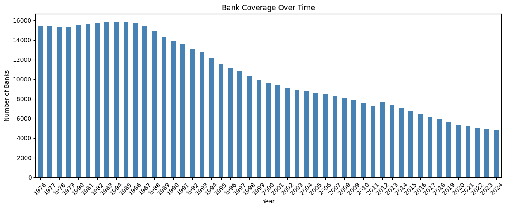

WRDS Bank Regulatory Premium Summary#
This notebook summarizes the WRDS Bank Regulatory Premium database tables.
Tables Available#
wrds_struct_rel_ultimate: Ultimate parent structure relationships
wrds_call_research: Call report research data (time series)
wrds_bank_crsp_link: Bank to CRSP linkage table
idrssd_to_lei: RSSD ID to LEI mapping
lei_main: Legal Entity Identifier main table
lei_legalevents: LEI legal events
lei_otherentnames: LEI other entity names
lei_successorentity: LEI successor entities
import sys
from pathlib import Path
sys.path.insert(1, "./src/")
import pandas as pd
import matplotlib.pyplot as plt
import chartbook
BASE_DIR = chartbook.env.get_project_root()
DATA_DIR = BASE_DIR / "_data"
Table Sizes#
tables = [
"wrds_struct_rel_ultimate",
"wrds_call_research",
"wrds_bank_crsp_link",
"idrssd_to_lei",
"lei_main",
"lei_legalevents",
"lei_otherentnames",
"lei_successorentity",
]
table_info = []
for table in tables:
try:
df = pd.read_parquet(DATA_DIR / f"{table}.parquet")
table_info.append({
"Table": table,
"Rows": len(df),
"Columns": len(df.columns)
})
except FileNotFoundError:
table_info.append({
"Table": table,
"Rows": "Not found",
"Columns": "N/A"
})
info_df = pd.DataFrame(table_info)
print(info_df.to_string(index=False))
Table Rows Columns
wrds_struct_rel_ultimate 12621576 11
wrds_call_research 2002806 372
wrds_bank_crsp_link 1495 6
idrssd_to_lei 36715 8
lei_main 33620169 8
lei_legalevents 1404312 12
lei_otherentnames 1222254 7
lei_successorentity 63369 7
wrds_call_research - Time Series Data#
call_research = pd.read_parquet(DATA_DIR / "wrds_call_research.parquet")
print(f"Shape: {call_research.shape}")
print(f"Date range: {call_research['date'].min()} to {call_research['date'].max()}")
print(f"Unique banks (rssd9001): {call_research['rssd9001'].nunique()}")
Shape: (2002806, 372)
Date range: 1976-03-31 00:00:00 to 2024-03-31 00:00:00
Unique banks (rssd9001): 24134
Bank Coverage Over Time#
call_research["date"] = pd.to_datetime(call_research["date"])
call_research["year"] = call_research["date"].dt.year
banks_per_year = call_research.groupby("year")["rssd9001"].nunique()
fig, ax = plt.subplots(figsize=(12, 5))
banks_per_year.plot(kind="bar", ax=ax, color="steelblue")
ax.set_xlabel("Year")
ax.set_ylabel("Number of Banks")
ax.set_title("Bank Coverage Over Time")
plt.xticks(rotation=45)
plt.tight_layout()
plt.show()

CRSP Linkage Statistics#
crsp_link = pd.read_parquet(DATA_DIR / "wrds_bank_crsp_link.parquet")
print(f"Total linkages: {len(crsp_link)}")
print(f"Unique banks (rssd9001): {crsp_link['rssd9001'].nunique()}")
print(f"Unique CRSP permcos: {crsp_link['permco'].nunique()}")
Total linkages: 1495
Unique banks (rssd9001): 1492
Unique CRSP permcos: 1450
LEI Coverage#
idrssd_lei = pd.read_parquet(DATA_DIR / "idrssd_to_lei.parquet")
print(f"Total RSSD-LEI mappings: {len(idrssd_lei)}")
print(f"Unique RSSD IDs: {idrssd_lei['id_rssd'].nunique()}")
lei_main = pd.read_parquet(DATA_DIR / "lei_main.parquet")
print(f"\nLEI Main records: {len(lei_main)}")
print(f"Unique LEIs: {lei_main['lei'].nunique()}")
Total RSSD-LEI mappings: 36715
Unique RSSD IDs: 34914
LEI Main records: 33620169
Unique LEIs: 2809933
FTSFR Dataset - Bank Total Assets#
ftsfr_df = pd.read_parquet(DATA_DIR / "ftsfr_bank_total_assets.parquet")
print(f"Shape: {ftsfr_df.shape}")
print(f"Date range: {ftsfr_df['ds'].min()} to {ftsfr_df['ds'].max()}")
print(f"Unique banks: {ftsfr_df['unique_id'].nunique()}")
print("\nTotal Assets Summary (in thousands):")
print(ftsfr_df["y"].describe())
Shape: (1999371, 3)
Date range: 1976-03-31 00:00:00 to 2024-03-31 00:00:00
Unique banks: 24081
Total Assets Summary (in thousands):
count 1.999371e+06
mean 1.010370e+06
std 2.315980e+07
min 0.000000e+00
25% 2.467200e+04
50% 6.098900e+04
75% 1.720650e+05
max 3.503360e+09
Name: y, dtype: float64